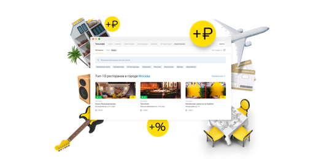
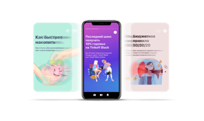

О Тинькофф
Тинькофф — онлайн-экосистема, основанная на финансовых и лайфстайл-услугах.
Клиентами Тинькофф стали 30 млн человек по всей России.
Тинькофф — третий крупнейший банк страны по количеству активных клиентов.
Экосистема Тинькофф
Тинькофф Банк
Банковское обслуживание онлайн на выгодных условиях. Без отделений и очередей
Тинькофф Бизнес
Экосистема для малого и среднего бизнеса. Сделано предпринимателями для предпринимателей
Тинькофф Инвестиции
Собственный биржевой брокер. Позволяет купить акции ведущих российских и мировых компаний в один клик
Лайфстайл-сервисы
Помогаем легко и удобно решить все околофинансовые задачи. Знаем, что вам нравится. Знаем, как это получить

Все развлечения в одном месте
С Тинькофф вы можете прямо на сайте купить билеты в кино, на концерты и даже на самолет
Еще можно забронировать отель и даже столик в ресторане
За все начислим дополнительный кэшбэк
Технологии
Голосовой помощник
В мобильном приложении Тинькофф есть голосовой помощник Олег. Он может подсказать курс валют или перевести деньги. А еще работает телефонным секретарем: принимает звонки, защищает от спама и мошенников и присылает запись разговора
Stories в мобильном банке
Прямо в приложении Тинькофф есть «Истории»: как в социальных сетях, но с подборками того, что вам понравится 
Лидер на рынке финансовых технологий
Тинькофф — технологическая компания с банковской лицензией. Примерно 70% сотрудников штаб-квартиры — IT-специалисты, которые каждый день создают лучшие цифровые продукты в России
Нейросети и роботы
Машинное обучение и искусственный интеллект применяются почти во всех процессах. Все обращения в Тинькофф обрабатываются искусственным интеллектом. В 30% случаев не требуется даже помощь оператора